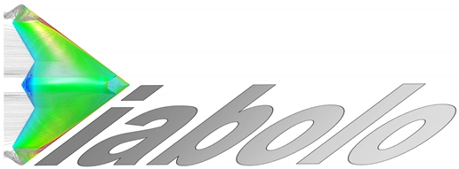

A selection of projects in which CPACS served as the common exchange format.

2018 – 2022
Demonstration of technologies and design of military fighter aircraft as part of a next-generation flying weapon system.
2016 – 2020
Development of innovative, holistic ship design optimisation methods that account for all main functional requirements, constraints and performance indicators. CPACS contributed the experience from aircraft ontology design to a common exchange format for preliminary vessel design.
2014 – 2017
Fourth in a series of projects building up a design environment for the collaborative and distributed analysis of aircraft configurations within DLR, Future Enhanced Aircraft Configurations applied the established tools and methods to non-conventional configurations. An automatic simulation workflow spanning several levels of fidelity investigated the potential of a strut-braced wing as a future short- to medium-range aircraft, and the flight mechanics and handling qualities of a blended-wing-body configuration were tested in the AVES flight simulator at DLR.
Over the project the team progressively built CPACS-based workflows for both configurations, drawing on more than 24 analysis modules from 11 DLR institutes. Design camps — meetings focused on one specific task, such as narrowing down candidate concepts — proved a useful addition to the process. In the final camps the multi-fidelity workflow was used to run designs of experiments, with the focus on comparing results across the three fidelity levels and interpreting them together, where the combined knowledge of all participants matters most.
2017 – 2019
In Advanced Technology Long-range Aircraft Concepts, completed in December 2019, CPACS served as the common language in a collaborative design project involving 13 DLR institutes. Advanced assessment procedures evaluated the impact of modern technologies — hybrid laminar flow control, a CO2 management system for cabins — on future aircraft configurations in a more holistic way, with an advanced mid-range aircraft as the underlying use case.
The range of disciplines and technologies underlines that it is not enough to model the aircraft itself: operational aspects belong in CPACS too, for instance to assess the climate impact of a design. The parametric logic of CPACS proved to be an enabler for technology evaluation studies that combine several promising technologies in a single configuration.